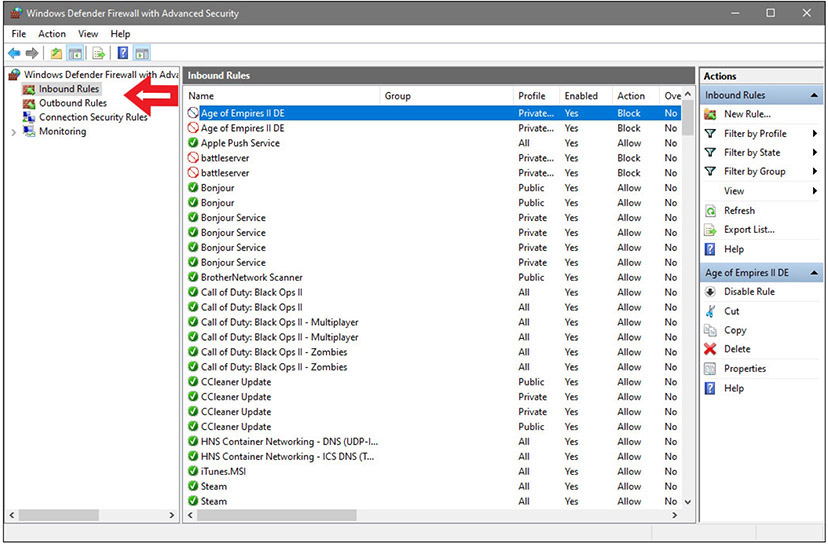
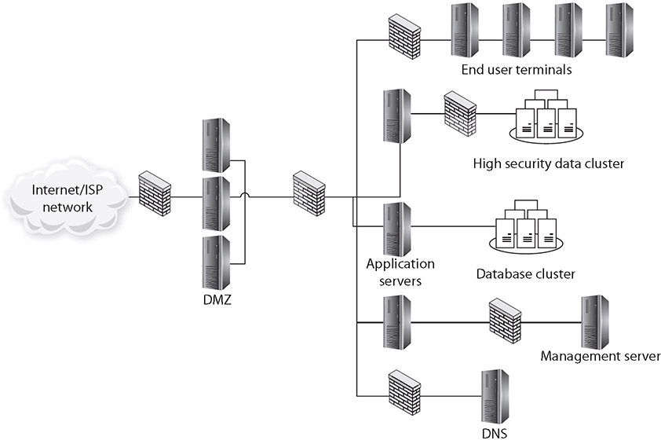

Table of Contents for
CompTIA Security+ All-in-One Exam Guide, Sixth Edition (Exam SY0-601)), 6th Edition
- Cover (01:09 mins)
- Title Page (01:09 mins)
- Copyright Page (03:27 mins)
- Dedication (01:09 mins)
- About the Authors (04:36 mins)
- Contents (19:33 mins)
- Preface (02:18 mins)
- Acknowledgments (01:09 mins)
- Introduction (12:39 mins)
-
Part I Threats, Attacks, and Vulnerabilities (01:09 mins)
- Chapter 1 Social Engineering Techniques (35:39 mins)
- Chapter 2 Type of Attack Indicators (37:57 mins)
- Chapter 3 Application Attack Indicators (33:21 mins)
- Chapter 4 Network Attack Indicators (39:06 mins)
- Chapter 5 Threat Actors, Vectors, and Intelligence Sources (44:51 mins)
- Chapter 6 Vulnerabilities (31:03 mins)
- Chapter 7 Security Assessments (23:00 mins)
- Chapter 8 Penetration Testing (25:18 mins)
-
Part II Architecture and Design (01:09 mins)
- Chapter 9 Enterprise Security Architecture (26:27 mins)
- Chapter 10 Virtualization and Cloud Security (25:18 mins)
- Chapter 11 Secure Application Development, Deployment, and Automation Concepts (27:36 mins)
- Chapter 12 Authentication and Authorization (33:21 mins)
- Chapter 13 Cybersecurity Resilience (39:06 mins)
- Chapter 14 Embedded and Specialized Systems (41:24 mins)
- Chapter 15 Physical Security Controls (49:27 mins)
- Chapter 16 Cryptographic Concepts (42:33 mins)
-
Part III Implementation (01:09 mins)
- Chapter 17 Secure Protocols (20:42 mins)
- Chapter 18 Host and Application Security (46:00 mins)
- Chapter 19 Secure Network Design (67:51 mins)
- Chapter 20 Wireless Security (25:18 mins)
- Chapter 21 Secure Mobile Solutions (43:42 mins)
- Chapter 22 Implementing Cloud Security (24:09 mins)
- Chapter 23 Identity and Account Management Controls (33:21 mins)
- Chapter 24 Implement Authentication and Authorization (37:57 mins)
- Chapter 25 Public Key Infrastructure (55:12 mins)
- Part IV Operations and Incident Response (01:09 mins)
- Part V Governance, Risk, and Compliance (01:09 mins)
- Part VI Appendixes and Glossary (01:09 mins)
- Glossary (65:33 mins)
- Index (67:51 mins)
CHAPTER 29
Mitigation Techniques and Controls
In this chapter, you will
• Learn about the different mitigations that can be applied to systems
• Learn about the various controls that can be used to secure systems
Systems cannot be completely secure by design or use, but a series of elements can be used to increase the security posture of a system. These controls and mitigation elements work to reduce risk in the system. This chapter explores various controls and mitigations covered on the Security+ exam.
Certification Objective This chapter covers CompTIA Security+ exam objective 4.4: Given an incident, apply mitigation techniques or controls to secure an environment.
Reconfigure Endpoint Security Solutions
Endpoint security solutions are controls that can mitigate risk at the endpoint. Endpoint solutions must recognize the threat and then trigger a specific action to mitigate the risk. Antivirus/antimalware solutions are the typical endpoint protection most users think of, as are elements such as firewalls and intrusion protection elements.
More integrated endpoint elements can be part of the operating system, or they can work with the operating system (OS) to alter behaviors to enforce rules. Microsoft has two mechanisms that are part of the Windows OS to manage which applications can operate on their machines:
• Software restrictive policies Employed via group policies, software restrictive policies allow significant control over applications, scripts, and executable files. The primary mode is by machine and not by user account.
• User account level control Enforced via AppLocker, a service that allows granular control over which users can execute which programs. Through the use of rules, an enterprise can exert significant control over who can access and use installed software.
On a Linux platform, similar capabilities are offered from third-party vendor applications.
The last question is, what do you do when something is detected that’s outside the desired specification? The typical response is to quarantine, which is described later in this chapter.
Application Approved List
Applications can be controlled at the OS at start time via verification of the application against a list of approved applications (whitelisting) and a list of blocked or denied applications (blacklisting). The application approved list consists of a list of allowed applications. If an application is not on the allowed list, it is blocked. Both whitelisting and blacklisting have advantages and disadvantages. Using a application approved list is easier to employ from the aspect of the identification of applications that are allowed to run, and hash values can be used to ensure the executables are not corrupted. The challenge in this approach is the number of potential applications that are run on a typical machine. For a single-purpose machine, such as a database server, this can be relatively easy to employ. For multipurpose machines, it can be more complicated, as applications can be missed, resulting in errors.
Application Blocklist/Deny List
The use of an application block or deny list is essentially noting which applications should not be allowed to run on the machine. This is basically a permanent “ignore” or “call block” type of capability. Also historically called blacklisting, it is difficult, if not impossible, to use against dynamic threats, as the identification of a specific application can easily be avoided through minor changes.

EXAM TIP Whitelisting, or the use of an application allow list, is the use of a list of approved applications. If an app is not on the whitelist, access is denied and the app won’t install or run. Blacklisting, or the use of an application blocklist/deny list, is a list of apps that are deemed undesirable. If an app is blacklisted, it won’t be installed or allowed to run.
Quarantine
When a system detects a condition that meets a specific set of rules and determines that an action is required, one of the important decisions is the finality of that action. In the case of a firewall, blocking a connection is final; the result cannot be undone. But in the case of a suspicious file, file change, or configuration change, there is the chance of error in the decision, and having a virtual “undo” capability may be desired. This is where the concept of quarantine enters the equation. Quarantining an item is to render it disabled but not permanently removed from the system. There are a variety of mechanisms to do this, but the end result is the same: a quarantine option gives the user the opportunity to undo the disablement. If the item had been permanently deleted, this option would not be available. Security tools that offer quarantine options have mechanisms to disable an item, and to re-enable it if instructed by the user.
Configuration Changes
Configurations are the lifeblood of a system. Protecting a system from configuration changes is essential to secure the system in the specific configuration that the implementation intended. Alterations to configurations can add functionality, remove functionality, even completely change system functionality by altering elements of a program to include outside code. Protecting a system from unauthorized configuration changes is important for security.
Firewall Rules
Firewalls operate by enforcing a set of rules on the traffic attempting to pass. This set of firewall rules, also called the firewall ruleset, is a mirror of the policy constraints at a particular point in the network. Thus, the ruleset will vary from firewall to firewall, as it is the operational implementation of the desired traffic constraints at each point. Firewall rules state whether the firewall should allow particular traffic to pass through or block it. The structure of a firewall rule can range from simple to very complex, depending on the type of firewall and the type of traffic. A packet filtering firewall can act on IP addresses and ports, either allowing or blocking based on this information.
Firewall rules have directionality; there are inbound and outbound rules. Inbound rules protect a machine from incoming traffic. Outbound rules can also protect against sending data (including requests) to unauthorized or dangerous places. An example of these rules and the categories of inbound and outbound are illustrated in Figure 29-1.

Figure 29-1 Firewall rules in Microsoft Defender, a Windows client solution
EXAM TIP Firewall rules make great performance-based questions—what rules belong on which firewall? Understanding how a rule blocks or allows traffic is essential, but so is seeing how the overall network flow picture is regulated by the rules. Be able to place rules to a network diagram to meet objectives.
MDM
Knowledge of mobile device management (MDM) concepts is essential in today’s environment of connected devices. MDM began as a marketing term for a collective set of commonly employed protection elements associated with mobile devices. When viewed as a comprehensive set of security options for mobile devices, every corporation should have and enforce an MDM policy. The policy should require the following:
• Device locking with a strong password
• Encryption of data on the device
• Device locking automatically after a certain period of inactivity
• The capability to remotely lock the device if it is lost or stolen
• The capability to wipe the device automatically after a certain number of failed login attempts
• The capability to remotely wipe the device if it is lost or stolen
Password policies should extend to mobile devices, including lockout and, if possible, the automatic wiping of data. Corporate policy for data encryption on mobile devices should be consistent with the policy for data encryption on laptop computers. In other words, if you don’t require encryption of portable computers, then should you require it for mobile devices? There isn’t a uniform answer to this question because mobile devices are much more mobile in practice than laptops, and more prone to loss. This is ultimately a risk question that management must address: what is the risk and what are the costs of the options employed? This also raises a bigger question: which devices should have encryption as a basic security protection mechanism? Is it by device type or by user based on what data would be exposed to risk? Fortunately, MDM solutions exist, making the choices manageable.
EXAM TIP Mobile device management (MDM) is the term for a collective set of commonly employed protection elements associated with mobile devices.
DLP
Data loss prevention (DLP) refers to technology employed to detect and prevent transfers of data across an enterprise. Employed at key locations, DLP technology can scan packets for specific data patterns. This technology can be tuned to detect account numbers, secrets, specific markers, or files. When specific data elements are detected, the system can block the transfer. The primary challenge in employing DLP technologies is the placement of the sensor. The DLP sensor needs to be able to observe the data, so if the channel is encrypted, DLP technology can be thwarted.
DLP began its life as an enterprise-level device or appliance, but the deployment of this technology has expanded to endpoints, including operating systems and apps such as Microsoft 365. These distributed solutions use DLP policies to detect, monitor, and protect against accidental release or exposure of sensitive information.
EXAM TIP DLP can be classified as a technical control. Its primary goal is to detect breaches and prevent data loss.
Content Filter/URL Filter
Content filters/URL filters are used to limit specific types of content across the Web to users. A common use is to block sites that are not work related, and to limit items such as Google searches and other methods of accessing content determined to be inappropriate. Like all other policy enforcement devices, content filters rely on a set of rules, and rule maintenance is an issue. One of the most common issues with content filters is blocking that is too broad. In a medical environment, blocking the word “breast” will not work, nor will it work in a chicken processing plant. There needs to be a mechanism in place to lift blocks easily and quickly if a user objects and it is easy to determine they should have access.
Update or Revoke Certificates
Certificates are used to pass cryptographic keys as part of a wide variety of processes—from signing data, to authentication services, to setting up cryptographic services between devices. Most of the work with certificates is automated and handled behind the scenes, but it is still reliant on a valid set of certificates and approved certificate chains. For details on how this works, see Chapter 25, “Public Key Infrastructure.” A crucial element of certificates is protecting the certificate chain on a machine. Errors in this element can cause certificates to be rejected. Failure to maintain valid certificates is another cause of failures. Many of these failures can go unnoticed, as was demonstrated in automated COVID-19 counts in the state of California. A certificate error with one of the state’s laboratory vendors caused a significant undercounting of results, and the cause was an expired certificate.
EXAM TIP Certificates remain valid for a specific duration of time. When a certificate is about to expire, it should be renewed if needed. However, sometimes certificates are revoked because the owner is no longer trusted, the encryption keys have been compromised, or there are changes or other errors with the certificate.
Isolation
Isolation is the use of networking protocols and resultant connectivity to limit access to different parts of a network. This limit can be partial or it can be complete, as offered by an air gap, and this method of separation is used to enforce different trust boundaries. More details about the role of networks is presented in the section “Segmentation,” which follows shortly.
Isolation can also be employed as part of an incident response strategy, where affected systems are isolated from the rest of the network. This is done to limit the risk caused by systems that are no longer functioning in a desired manner. In the case of a ransomware infection, this is a key mitigation element if it can be employed early in the incident.
Containment
Containment is a key concept in incident response. Containment is the act of performing specific actions that limit the damage potential of an incident, keeping the damage limited, and preventing further damage. Containment can be done using a variety of mechanisms, including network segmentation, quarantining of unauthorized elements, or changing of system configurations. The objective is the same: limit the exposure of the system to the damaging element.
Segmentation
As networks have become more complex, with multiple layers of tiers and interconnections, a problem can arise in connectivity. One of the limitations of the Spanning Tree Protocol (STP) is its inability to manage layer 2 traffic efficiently across highly complex networks. STP was created to prevent loops in layer 2 networks and has been improved in its current version, called Rapid Spanning Tree Protocol (RSTP). RSTP creates a spanning tree within the network of layer 2 switches, disabling links that are not part of the spanning tree. RSTP, IEEE 802.1w, provides a more rapid convergence to a new spanning tree solution after topology changes are detected. The problem with the spanning tree algorithms is that the network traffic is interrupted while the system recalculates and reconfigures. These disruptions can cause problems in network efficiencies and have led to a push for flat network designs, which avoid packet-looping issues through an architecture that does not have tiers.
One name associated with flat network topologies is network fabric, a term meant to describe a flat, depthless network. Network fabrics are becoming increasingly popular in data centers and other areas of high-traffic density, as they can offer increased throughput and lower levels of network jitter and other disruptions. While this is good for efficiency of network operations, this “everyone can talk to everyone” idea is problematic with respect to security.
Modern networks, with their increasingly complex connections, result in systems where navigation can become complex between nodes. Just as a DMZ-based architecture allows for differing levels of trust, the isolation of specific pieces of the network using security rules can provide differing trust environments. There are several terms used to describe the resultant architecture, including network segmentation, segregation, isolation, and enclaves. Enclaves is the most commonly used term to describe sections of a network that are logically isolated by segmentation at the networking protocol. The concept of segregating a network into enclaves can create areas of trust where special protections can be employed and traffic from outside the enclave is limited or properly screened before admission.
Enclaves are not diametrically opposed to the concept of a flat network structure; they are just carved-out areas, like gated neighborhoods, where one needs special credentials to enter. A variety of security mechanisms can be employed to create a secure enclave. Layer 2 addressing (subnetting) can be employed, making direct addressability an issue. Firewalls, routers, and application-level proxies can be employed to screen packets before entry or exit from the enclave. Even the people side of the system can be restricted by dedicating one or more system administrators to manage the systems.
Enclaves are an important tool in modern secure network design. Figure 29-2 shows a network design with a standard two-firewall implementation of a DMZ. On the internal side of the network, multiple firewalls can be seen, carving off individual security enclaves, or zones where the same security rules apply. Common enclaves include those for high-security databases, low-security users (call centers), public-facing kiosks, and the management interfaces to servers and network devices. Having each of these in its own zone provides for more security control. On the management layer, using a nonroutable IP address scheme for all of the interfaces prevents them from being directly accessed from the Internet.

Figure 29-2 Secure enclaves
EXAM TIP Segmentation, as it applies to networking security, is a broad term. VLANs, firewalls, and even storage segmentation and containerization can be used for segmentation purposes.
Secure Orchestration, Automation, and Response (SOAR)
Security operations in an enterprise environment have a lot of moving parts. From a top-level view, you have vulnerability management, threat intelligence, incident response, and automated security operations. All of these operate off of data—data that comes from a myriad of network appliances, intrusion detection systems, firewalls, and other security devices. This data is typically fed into a security information and event management (SIEM) system that can collect, aggregate, and apply pattern matching to the volumes of data. Alerts can then be processed by security personnel. However, this is far from complete integration. Security orchestration, automation, and response (SOAR) systems take SIEM data as well as data from other sources and assist in the creation of runbooks and playbooks.
Security administrators can create a series of runbooks and playbooks that can be used in response to a wide range of incident response activities. The details behind runbooks and playbooks are covered next. Combinations of runbooks and playbooks can be used to document different security processes and can provide users with approved procedures for orchestrating even the most complex security workflows. SOAR software integrates all of these elements into manageable solutions for the security operations center personnel, integrating both raw and processed data into actionable steps based on approved procedures.
EXAM TIP SOAR systems are extremely valuable when it comes to incident mitigation of severe threats because they can automate data gathering and initiate threat response.
Runbooks
A runbook consists of a series of action-based conditional steps to perform specific actions associated with security automation. These actions might involve data harvesting and enrichment, threat containment, alerts and notifications, and other automatable elements of a security operations process. The primary purpose of a runbook is to accelerate the incident response process by automating a series of approved steps and processes. Runbooks typically are focused on the systems and services and how they are actively managed.
Playbooks
A playbook is a set of approved steps and actions required to successfully respond to a specific incident or threat. Playbooks are commonly instantiated as itemized checklists, with all pertinent data prefilled in—systems, team members, actions, and so on. Playbooks provide a simple step-by-step, top-down approach to the orchestration of activities of the security team. They can include a wide range of requirements—technical requirements, personnel requirements, and legal or regulatory requirements—all in a preapproved form that alleviates spur-of-the-moment scrambling when the clock is ticking on an active event.
EXAM TIP A runbook typically focuses on technical aspects of computer systems or networks. A playbook is more comprehensive and has more of a people/general business focus.
Chapter Review
In this chapter, you became acquainted with mitigation techniques and security controls used to secure an environment. The chapter opened with a discussion of configuring endpoint security solutions. Specifically, the topics of application whitelisting, application blacklisting, and quarantine were presented. The next major section covered configuration changes. The subsections in this area included firewall rules, mobile device management, data loss prevention, content filters/URL filters, and update or revoke certificates.
The chapter then covered the topics of isolation, containment, and segmentation. The chapter concluded with the topic of security orchestration, automation, and response (SOAR), along with the subtopics of runbooks and playbooks.
Questions
To help you prepare further for the CompTIA Security+ exam, and to test your level of preparedness, answer the following questions and then check your answers against the correct answers at the end of the chapter.
1. You have been directed by upper management to block employees from accessing Facebook from the corporate machines. Which would be the easiest way to exercise this control?
A. Application allow list
B. Application block list
C. DLP
D. Content filtering
2. Having an expired certificate is an example of what type of error?
A. Mobile device management
B. Configuration
C. Application whitelisting
D. Content filter/URL filter
3. A system-focused set of predetermined automation steps is an example of what?
A. Isolation
B. Runbook
C. Playbook
D. Firewall rules
4. Your business application server sends data to partners using encrypted (signed) messages. You hear from one of the partners that their messages have ceased coming. What should you investigate?
A. Application whitelist
B. Application blacklist
C. The playbook for the system
D. Configuration settings of the process
5. You have kiosk-based machines in the lobby and scattered through the facility. They do not require a login for guests to access certain items. What is the best way to protect these machines from users introducing trojans?
A. Application allow list
B. Application block list
C. Data loss prevention
D. Configuration settings of the process
6. To coordinate team activities during an incident response event, what is the best way to communicate approved instructions?
A. Runbook
B. MDM solution
C. Quarantine rule
D. Playbook
7. Your security system has identified a specific executable as potentially dangerous. What is the best way to handle the specific item that was identified?
A. Segmentation
B. Quarantine
C. Firewall rule
D. Playbook
8. Your company has merged with another company, and it uses a different release of accounting software than your company does. How could you provision user machines in accounting so they will not inadvertently run the incorrect version?
A. Application allowlisting
B. Isolation
C. Configurations associated with the application
D. Application block listing
9. You wish to keep people from using the internal mobile network to play games on their personal phones. What would be the best method of managing this?
A. MDM
B. Application block list
C. Content filter
D. Segmentation
10. What is the primary purpose of a SOAR solution?
A. To collect and aggregate diverse security data
B. To analyze data for anomalies and to create alerts
C. To produce approved, detailed response plans with respect to given incident response scenarios
D. To manage configuration changes on systems
Answers
1. D. Facebook is accessed via a browser, so you would need to install content filtering.
2. B. A certificate error is typically caused by a configuration error associated with the certificate.
3. B. The wording “system-focused” points to a runbook. A playbook is business process focused.
4. D. The certificate has likely been revoked or removed from that user’s identity and no longer marked valid by the certificate authority. This is a configuration error.
5. A. Strict application allow listing will limit what runs on the system to only those applications authorized.
6. D. Playbooks focus on communication team responses in the form of business-focused elements as opposed to technical machine elements.
7. B. Because the item is an object, quarantine applies. Other methods of isolation belong to networks and systems.
8. D. Application block listing the application by version number will prevent specific versions from being executed on selected machines.
9. A. Forcing users to install an MDM solution before connecting their phone to the internal network resolves many security issues, including access control issues.
10. C. SOARs are known for producing runbooks and playbooks in response to specific conditions.